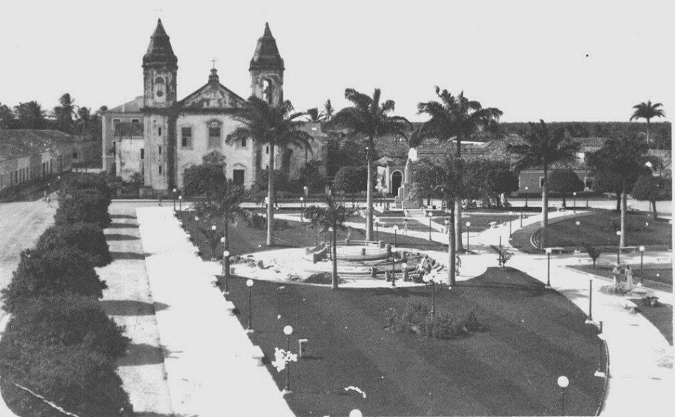
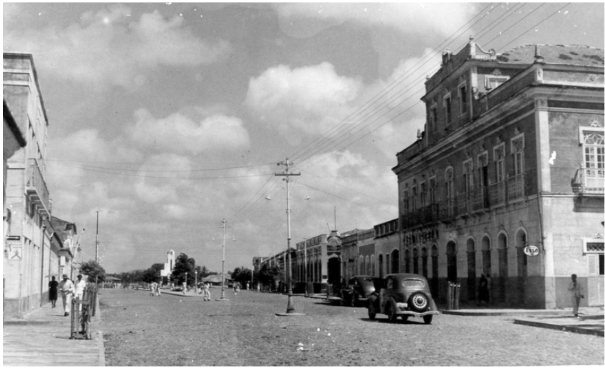

Memórias visuais de Parnaíba
Explore paisagens, ruas e monumentos que ajudam a contar a história da cidade em diferentes épocas.
Explorar galeriaUse as setas do teclado para navegar pelos slides e Enter ou espaço para ativar um controle do slider.

Explore paisagens, ruas e monumentos que ajudam a contar a história da cidade em diferentes épocas.
Explorar galeria
Uma seleção de imagens que preserva fachadas, percursos e lembranças do cotidiano parnaibano.
Ver acervo
Registros visuais revelam transformações urbanas e o valor simbólico do patrimônio da cidade.
Conhecer coleção
Postais, fotografias e detalhes urbanos reunidos para valorizar a memória afetiva de Parnaíba.
Explorar postaisDescubra cenas antigas e contemporâneas que aproximam passado, identidade e pertencimento.
Abrir galeriaNosso passeio começa a partir de uma pesquisa histórica minuciosa, que reuniu mais de 700 fotografias antigas da cidade de Parnaíba, além de mapas, pinturas e cartões-postais provenientes de diversos acervos institucionais e pessoais.
Grande parte desse material foi compilada por meio do grupo Parnaíba das Antigas e cedida por parnaibanos e entusiastas de nossa história.

Uma seleção de lugares marcantes reunidos em cartões e fotografias que ajudam a contar a história visual da cidade.
Histórias, memórias e postais antigos da cidade apresentados em formato editorial, com imagens históricas e novas leituras sobre o patrimônio local.
Uma crônica sobre comércio, encontros e a memória popular que atravessa as ruas do centro histórico.
Ler história
Uma leitura afetiva sobre fachadas, deslocamentos e permanências no coração urbano da cidade.
Ler história
A nova área editorial foi preparada para receber futuras crônicas, imagens comparativas e publicações vindas de backend.
Ver acervo editorial